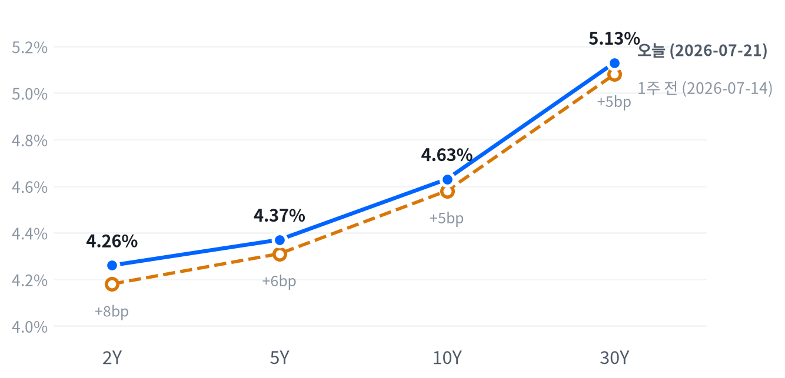

오늘 장을 관통한 단일 동인은 유가다. 미-이란 확전과 홍해·흑해 항로 리스크가 브렌트를 4년래 고점권으로 밀어 올렸고, 이 공급충격이 국채 금리 상승·성장주 약세·에너지 및 방어섹터 강세라는 익숙한 연쇄 반응을 하루 만에 압축적으로 만들어냈다. 워시 Fed 의장의 매파적 코멘트가 같은 방향으로 겹치면서 CME FedWatch 상 9월 금리 인상 확률이 67~68%까지 뛴 점도 금리 상승을 뒷받침했다.
크로스에셋으로 보면 정합성이 상당히 높다. 유가 급등(+3.9~5.2%) → 국채 금리 상승(2Y 중심 베어 플래트닝) → 성장주·소형주 약세, 가치주·에너지·소재·유틸리티 강세 → 안전자산인 금도 지정학 프리미엄으로 동반 강세라는 흐름이 서로 어긋나지 않는다. 다만 달러(DXY -0.04%)만 거의 무반응이었는데, 이는 금리 상승(달러 강세 요인)과 안전자산 선호에 따른 엔·스위스프랑 분산(달러 약세 요인)이 상쇄된 결과로 보이며 방향성 베팅의 신뢰도가 낮은 자산으로 남겨둘 만하다.
다음 촉매는 명확하다. 장 마감 후 예정된 알파벳·테슬라 실적이 빅테크 밸류에이션 서사를 좌우하고, 유가는 이란·이스라엘 관련 헤드라인에 따라 추가 스파이크 또는 급반전 가능성이 열려 있다. 다음 주 FOMC에서 워시 의장이 실제로 매파 기조를 재확인하는지, 9월 인상 확률이 시장 가격에 추가로 반영되는지가 채권·주식 양쪽의 단기 변곡점이 될 전망이다.
| 지수 | 종가 | 등락 | 등락률 |
|---|---|---|---|
| Dow | 52,218.58 | -6.06 | -0.01% |
| S&P 500 | 7,498.96 | -10.24 | -0.14% |
| Nasdaq | 25,690.90 | -146.31 | -0.57% |
| Russell 2000 | 2,959.94 | -27.46 | -0.92% |
| S&P 500 Growth | 135.97 | -0.37 | -0.27% |
| S&P 500 Value | 230.73 | +0.17 | +0.07% |
| 섹터 | 종가 | 등락 | 등락률 |
|---|---|---|---|
| Utilities | 45.93 | +1.01 | +2.25% |
| Materials | 50.82 | +0.72 | +1.44% |
| Energy | 59.20 | +0.70 | +1.20% |
| Consumer Staples | 84.38 | +0.32 | +0.38% |
| Industrials | 178.85 | +0.19 | +0.11% |
| Financials | 56.05 | -0.06 | -0.11% |
| Technology | 180.27 | -0.51 | -0.28% |
| Real Estate | 45.01 | -0.19 | -0.42% |
| Health Care | 159.43 | -0.82 | -0.51% |
| Consumer Disc. | 114.02 | -0.85 | -0.74% |
| Comm. Services | 109.20 | -0.83 | -0.75% |
나스닥은 개장가(25,692.1) 대비 09:30에 -0.04% 저점을 짧게 찍은 뒤 반등해 11:30에는 개장가 대비 +0.58% 고점까지 올라섰으나, 오후 들어 상승분을 대부분 반납하며 전일 대비 -0.57% 약보합으로 마감했다. S&P 500도 09:30 저점(개장가 대비 -0.15%)과 12:30 고점(+0.38%)을 차례로 찍은 뒤 다시 밀리는 등 하루 종일 방향성 없는 등락을 반복했다.
Russell 2000은 궤적이 확연히 달랐다. 개장 직후인 09:30에 하루 중 고점(개장가 대비 +0.03%)을 찍은 후 반등 없이 15:30 마감 직전까지 거의 일방적으로 밀려 저점(-0.90%)에서 장을 마쳤다 — 금리 상승과 위험회피 심리가 금리 민감도가 높은 소형주에 가장 집중된 결과로 풀이된다.
빅테크 개별 종목의 변동성도 스윙을 키웠다. 엔비디아는 개장 직후(09:30) -0.42% 저점을 찍은 뒤 13:00에는 개장가 대비 +4.17% 고점까지 급등했다가 종가 기준 전일比 +2.30%로 상승폭을 일부 반납했다. 장 마감 후 예정된 알파벳·테슬라 실적 발표를 앞둔 대기 심리가 오후장 변동성을 키웠다는 점이 CNBC·Yahoo Finance 마켓 라이브에서 지목됐다.
가치주(+0.07%)가 성장주(-0.27%)를 하루 만에 역전한 배경은 유가발 금리 상승이다. 할인율에 민감한 장기 듀레이션 성장주·소형주가 먼저 팔리고, 실물자산·현금흐름 중심의 에너지·소재·유틸리티로 자금이 이동하는 전형적인 인플레이션 재점화 국면의 로테이션이 하루 만에 압축적으로 나타났다.
다만 낙폭 자체는 -1%를 밑도는 수준이어서 패닉보다는 포지션 조정에 가깝다. 알파벳·테슬라 실적과 다음 주 FOMC를 앞두고 대형주 매수 강도를 낮추면서 관망하는 모습이 뚜렷했고, 러셀2000의 하루 중 저점 마감은 소형주 롱 포지션에 대한 손절 트리거로 볼 만하다.
| 만기 | 07-21 종가 | 전일比(bp) | 1주 전(07-14) | 주간 변화(bp) |
|---|---|---|---|---|
| 2Y | 4.26% | +5bp | 4.18% | +8bp |
| 5Y | 4.37% | +4bp | 4.31% | +6bp |
| 10Y | 4.63% | +3bp | 4.58% | +5bp |
| 30Y | 5.13% | +2bp | 5.08% | +5bp |

2Y·5Y·10Y·30Y 국채금리, 오늘(2026-07-21 FRED 기준)과 1주 전(2026-07-14) 비교. 전 구간 상승했고 단기물 상승폭이 더 커 커브가 눌렸다.
2s10s 스프레드는 오늘 37bp로 1주 전 40bp에서 3bp 줄었다. 전 구간 금리가 상승한 가운데 2Y가 +8bp로 10Y(+5bp)·30Y(+5bp)보다 더 크게 올라 전형적인 베어 플래트닝(bear flattening) 흐름이다 — 금리인상 우려가 단기물 중심으로 반영됐다는 뜻이다.
일간 변화도 같은 방향이다(2Y +5bp > 10Y +3bp > 30Y +2bp). 참고로 야후 파이낸스 동일자(07-22) 스팟 금리는 10Y 4.657%, 30Y 5.147%로 FRED 07-21치보다 더 높아, 유가 급등 이후 장중 추가 상승 압력이 실제로 있었을 가능성을 뒷받침한다.
포지셔닝 관점에서는 단기물 숏 듀레이션·장기물 상대 비중 확대(커브 스티프너 청산 혹은 플래트너 유지)가 합리적이다. 워시 Fed 의장의 매파적 발언과 유가발 인플레 압력이 겹친 국면에서는 2Y가 정책금리 기대를 가장 먼저, 가장 크게 반영하기 때문에 단기구간 익스포저 축소가 우선이다. 다만 9월 FOMC 전까지 지표(CPI·PCE) 확인 없이 방향성 베팅을 확대하는 것은 이르다.
| 통화쌍 | 종가 | 등락 | 등락률 |
|---|---|---|---|
| DXY | 101.14 | -0.04 | -0.04% |
| USD/KRW | 1,476.32 | +1.31 | +0.09% |
| USD/JPY | 163.11 | +0.62 | +0.38% |
| EUR/USD | 1.1410 | -0.0008 | -0.07% |
USD/JPY는 00:00(전일 아시아 마감 무렵) 163.23 부근 고점을 기록한 뒤 08:30 ET에 162.66까지 밀렸다가 저녁 무렵 재차 반등해 163.11로 마감, 전일 대비 +0.38% 소폭 상승했다. 안전자산 선호(엔 매수)와 미 국채 금리 상승(달러 매수)이 하루 동안 힘겨루기를 벌인 흐름으로 읽힌다.
DXY는 -0.04%로 거의 보합인데, 이는 국채 금리 상승이라는 달러 강세 재료와 지정학 리스크에 따른 안전자산 선호(엔·스위스프랑 등으로의 분산)가 상쇄된 결과로 볼 수 있다. EUR/USD는 -0.07% 소폭 약세, USD/KRW는 +0.09% 소폭 상승(원화 약세)에 그쳐 전반적으로 FX 변동성은 주식·원자재 대비 크지 않았다.
| 품목 | 종가 | 등락 | 등락률 |
|---|---|---|---|
| WTI | $88.20 | +3.29 | +3.87% |
| Brent | $95.73 | +4.72 | +5.19% |
| Natural Gas | $2.941 | +0.076 | +2.65% |
| Gold | $4,128.10 | +57.00 | +1.40% |
최대 변동 품목은 Brent로 +5.19% 급등했고 WTI도 +3.87% 뛰며 7주 만의 최고 수준을 기록했다. 미국의 對이란 공습이 11일째 이어지고 예멘 후티 반군의 홍해 항로 위협, 흑해 CPC 터미널 공격까지 겹치며 공급 차질 우려가 유가를 밀어 올렸다.
WTI는 아시아·유럽 장 초반(01:30 ET 저점, 개장가 대비 -0.39%)에 잠시 눌렸다가 05:30 ET 고점(개장가 대비 +3.82%)까지 급등한 뒤 그 상승분을 거의 그대로 유지하며 마감했다 — 지정학 재료가 이른 시간대에 이미 가격에 반영되고 이후 되돌림이 크지 않았다는 의미다.
금은 +1.40%로 안전자산 수요와 실질금리 상승 우려가 교차했다. 11:30 ET 장중 고점(개장가 대비 +0.88%)까지 오른 뒤 저녁 18:00 ET 저점(개장가 대비 -1.46%)까지 상승분 대부분을 반납했다가 종가 무렵 재차 낙폭을 줄이며 전일比 +1.40%로 마감했다. 국채 금리 상승이 금 보유비용을 높이는 역풍인데도 지정학 리스크 프리미엄이 이를 압도한 셈이다.
| 자산군 | 판단 | 근거 |
|---|---|---|
| 주식 | 비중축소·선별 | 유가발 금리 상승 국면에서는 장기 듀레이션 성장주·소형주 대신 에너지·소재·가치주 상대 비중을 유지. 빅테크 실적(알파벳·테슬라) 확인 전까지 지수 방향성 베팅은 자제 |
| 채권 | 단기물 숏 듀레이션 | 2Y 중심 베어 플래트닝 지속 시 단기구간 손실 위험. 9월 FOMC 전까지 커브 플래트너 유지, CPI·PCE 확인 후 장기물 비중 확대 검토 |
| FX | 중립·관망 | 금리 상승(달러 강세 요인)과 안전자산 선호(엔 강세 요인)가 상쇄돼 DXY 방향성 낮음. 엔화는 안전자산 플로우에 따라 단기 변동성 확대 가능 |
| 원자재 | 비중확대 유지 | 지정학 리스크 프리미엄이 계속되는 한 원유·금 동반 강세 여지. 다만 확전 완화 헤드라인 시 되돌림 폭이 클 수 있어 트레일링 손절 필요 |
| 메모리 | 구조적 비중확대 | AI 데이터센터發 DRAM·NAND 공급부족("RAMageddon")이 2027년까지 이어질 전망. 단기 조정(마이크론 -1.17%)은 직전 12~14% 급등에 대한 숨고르기로 판단, 눌림목 매수 관점 |
| AI 인프라 | 종목 선별 필요 | GE Vernova 실적 쇼크(-8.69%)가 보여주듯 'AI 기대치 대비 실적 미스'에 대한 시장 관용도가 낮아지는 국면. 매출 서프라이즈만으로는 부족하고 마진·가이던스까지 충족해야 주가가 버틴다 |
확전 지속·유가 추가 급등: 이란-이스라엘 충돌이 격화되거나 호르무즈 해협 통항에 실질적 차질이 생기면 유가가 추가로 급등하며 인플레이션 재점화와 금리 급등, 위험자산 급락이 동시에 나타날 수 있다. 이 경우 9월 FOMC 금리 인상 가능성이 실제 액션으로 이어질 확률이 높아진다.
AI 인프라 밸류에이션 조정 확산: GE Vernova식 '실적은 견조하나 기대치 미달'이 다른 AI 데이터센터 밸류체인 종목(전력·냉각·광통신)으로 번지면 최근 6개월~1년 급등한 기술·AI 관련주 전반의 밸류에이션 리레이팅이 촉발될 수 있다.
확전 완화·유가 급반전: 외교적 타결이나 휴전 헤드라인이 나올 경우 유가 프리미엄이 빠르게 빠지며 오늘의 로테이션(가치·에너지 강세, 성장·소형주 약세)이 그대로 되돌려질 위험이 있다. 원자재 롱 포지션은 이 시나리오에 대한 손절선을 사전에 설정해둘 필요가 있다.
GE Vernova (-8.69%, 당일 최대 낙폭) — 2분기 매출은 컨센서스($107.3억)를 상회한 $111억(+22% YoY)을 기록했지만 조정 EPS $2.47은 컨센서스 $3.04를 크게 하회했다. 풍력 부문 신규 수주가 -40%로 부진했고 해상풍력 프로젝트 비용 상승이 계속 발목을 잡았다. Bloomberg는 "AI 데이터센터向 장비 판매 기업들이 시장의 지나치게 높은 기대치를 충족시키기 어려워지고 있다"는 신호로 풀이했다.
유틸리티 섹터 (+2.25%, 당일 최대 상승 섹터) — 지정학 리스크에 따른 방어주 선호와 필립모리스인터내셔널·AT&T 등 개별 실적 호조가 겹치며 가장 강한 하루를 보냈다. 금리 상승에도 불구하고 안정적 현금흐름과 인플레이션 헤지 성격이 부각된 것으로 보인다.
엔비디아 (+2.30%, 장중 고점 대비 +4.17%) — Tower Semiconductor의 코히런트 포토닉 IC 500만개 이상 출하 소식과 AI 데이터센터 커넥티비티 확장 기대가 맞물린 마벨(+1.46%) 강세와 함께, AI 반도체 밸류체인 내에서도 종목별 온도차가 뚜렷했던 하루였다.
| 종목 | 종가 | 등락 | 등락률 |
|---|---|---|---|
| Micron | $959.48 | -11.34 | -1.17% |
| Western Digital | $556.67 | +8.28 | +1.51% |
| Seagate | $908.10 | +16.27 | +1.82% |
| Nvidia | $212.06 | +4.77 | +2.30% |
| Samsung Elec | ₩260,500 | +1,500 | +0.58% |
| SK hynix | ₩1,830,000 | -6,000 | -0.33% |
메모리·스토리지 업종은 이른바 "RAMageddon" 국면이 이어지고 있다. AI 데이터센터發 수요 폭증으로 DRAM 계약가는 2026년 1분기에만 최대 95% 급등했고 NAND 가격도 분기마다 가파르게 오르는 중이다. 웨스턴디지털·시게이트는 2026년 하드디스크 생산분을 사실상 AI 데이터센터向으로 완판했으며, 경영진은 DRAM·NAND 공급 부족이 2027년 이후까지 이어질 것으로 내다봤다(Motley Fool 6/26).
오늘 종목별 흐름은 엇갈렸다. 마이크론(-1.17%)만 하락했는데, 직전 거래일(7/20~7/21) 마이크론·웨스턴디지털·샌디스크가 12~14% 급등했던 점을 감안하면 단기 차익실현 성격의 숨고르기로 볼 수 있다. 웨스턴디지털(+1.51%)·시게이트(+1.82%)는 상승세를 이어갔다.
투자 관점에서는 공급부족 서사가 구조적이라는 점이 핵심이다. 단기 변동성(오늘 마이크론 조정)에 흔들리기보다, 2027년까지 이어질 것으로 전망되는 공급 타이트닝 사이클에 베팅하는 눌림목 매수 전략이 유효하다는 판단이다.
| 종목 | 분야 | 종가 | 등락 | 등락률 |
|---|---|---|---|---|
| Marvell | 반도체/데이터센터 커넥티비티 | $210.99 | +3.03 | +1.46% |
| Coherent | 광통신 부품 | $312.19 | -5.03 | -1.59% |
| Lumentum | 광통신 부품 | $829.70 | -7.86 | -0.94% |
| GE Vernova | 전력 인프라/터빈 | $985.03 | -93.78 | -8.69% |
| Vertiv | 데이터센터 냉각/전력관리 | $301.16 | -3.34 | -1.10% |
GE Vernova의 실적 쇼크가 같은 AI 데이터센터 인프라 밸류체인인 Vertiv(-1.10%)·Coherent(-1.59%)·Lumentum(-0.94%) 등 전력·냉각·광통신 관련주 전반의 동반 약세로 번진 것으로 추정된다(개별 실적 발표는 확인되지 않았고, GE Vernova 충격의 섹터 전이로 보는 시각). 직전(7/7)에도 경쟁사 지멘스에너지에 대한 Barclays의 '가스터빈 사이클 피크아웃' 다운그레이드로 GE Vernova가 -6.5%를 기록한 바 있어, AI 전력인프라 밸류에이션에 대한 경계심이 누적돼 온 흐름으로 볼 수 있다.
반면 마벨(+1.46%)은 강세였다. Tower Semiconductor가 마벨 고객사向 코히런트 포토닉 IC를 500만개 이상 출하했다는 소식과 Nvidia와의 파트너십 확대, Teralynx T100 AI 스위치 실리콘 출시 등이 배경으로 거론된다. 마벨과 루멘텀은 광회로 스위칭(OCS) 공동 시연도 지속하고 있어 두 종목의 등락 방향이 엇갈린 점이 눈에 띈다.
투자 관점에서는 AI 인프라 밸류체인 내 '옥석 가리기'가 본격화됐다고 볼 수 있다. 매출 서프라이즈만으로는 주가를 지키기 어렵고 마진·가이던스까지 시장 기대를 충족해야 하는 국면이므로, 실적 발표를 앞둔 관련 종목에 대해서는 포지션 크기를 보수적으로 가져가는 편이 안전하다.
| 지표 | Actual | Forecast | Previous | 발표일/기준월 | 판정 |
|---|---|---|---|---|---|
| Initial Jobless Claims (07-11주) | 208K | 217K | 216K | 2026-07-17 | 하회▼ |
| Continuing Jobless Claims (07-04주) | 1,805K | 1,820K | 1,821K | 2026-07-17 | 하회▼ |
| Initial Claims 4주 이동평균 | 214.25K | — | 219K | 기준: 2026-07-11주 | — |
| Nonfarm Payrolls (전월비) | +57K | — | +129K | 기준월: 2026-06 | — |
| 실업률 | 4.2% | — | 4.3% | 기준월: 2026-06 | — |
| 시간당 평균임금 MoM | +0.35% | — | +0.27% | 기준월: 2026-06 | — |
| JOLTS 구인건수 | 7,594K | — | 7,585K | 기준월: 2026-05 | — |
| 지표 | Actual | Forecast | Previous | 발표일/기준월 | 판정 |
|---|---|---|---|---|---|
| 산업생산 MoM | +0.08% | — | +0.14% | 기준월: 2026-06 | — |
| 내구재수주 MoM | -4.47% | — | +8.51% | 기준월: 2026-05 | — |
| 신규주택판매 | 580K | — | 626K | 기준월: 2026-05 | — |
| 기존주택판매 | 4.09M | 4.20M | 4.19M | 2026-07-09 | 하회▼ |
| 실질GDP 성장률 (연율, QoQ) | +2.1% | — | +0.5% | 기준분기: 2026 Q1 | — |
| 필라델피아 연준 제조업지수 | 41.4 | 12.7~13.0 | 10.3 | 2026-07-16 | 상회▲ |
| 지표 | Actual | Forecast | Previous | 발표일/기준월 | 판정 |
|---|---|---|---|---|---|
| 소매판매 MoM | +0.22% | +0.3% | +1.02% | 2026-07-16 | 하회▼ |
| 미시간대 소비자심리지수 | 44.8 | — | 49.8 | 기준월: 2026-05 | — |
| 지표 | Actual | Forecast | Previous | 발표일/기준월 | 판정 |
|---|---|---|---|---|---|
| CPI YoY | 3.73% | 3.8~3.9% | 4.27% | 2026-07-14 | 하회▼ |
| CPI MoM | -0.42% | -0.1% | +0.47% | 2026-07-14 | 하회▼ |
| Core CPI YoY | 2.81% | ~2.9% | 2.96% | 2026-07-14 | 하회▼ |
| Core CPI MoM | -0.02% | +0.2% | +0.21% | 2026-07-14 | 하회▼ |
| PPI 최종수요 MoM | -0.28% | 0.0% | +0.62% | 2026-07-15 | 하회▼ |
| PCE Price Index YoY | 4.07% | — | 3.80% | 기준월: 2026-05 | — |
| Core PCE YoY | 3.41% | — | 3.32% | 기준월: 2026-05 | — |
| 미시간대 1년 기대인플레 | 4.8% | — | 4.7% | 기준월: 2026-05 | — |
CPI·Core CPI·PPI가 모두 예상치를 밑돌며(YoY·MoM 전 항목 하회) 디스인플레이션 신호가 뚜렷했던 게 불과 1주일 전인데, 이번 주 국채 금리는 오히려 전 구간 상승했다. 지표 발표 시점과 시장 가격이 반영하는 시점 사이에 유가발 충격이 끼어든 결과로, 시장은 6월 CPI라는 '과거 성적표'보다 유가 급등이 만들 7~8월 CPI를 더 중요하게 재가격하고 있다.
CME FedWatch 기준 9월 FOMC 금리 인상 확률은 최근 수 주 사이 급격히 높아져 약 67~68%에 이른다. 불과 얼마 전까지 시장 컨센서스는 인하 사이클이었던 점을 감안하면 매우 빠른 재가격이며, Polymarket 등 예측시장에서도 9월 인상 관련 컨트랙트 가격이 최근 1주일 사이 약 22%p 뛰었다는 점이 같은 방향을 가리킨다. 다만 재무장관 베선트는 9월까지 금리 인하를 기대한다는 상반된 코멘트를 내놓아, 정부와 시장의 금리 경로 전망 사이에 온도차가 존재한다.
선행지표인 심리 축에서는 방향이 엇갈린다. 필라델피아 연준 제조업지수(41.4, 예상 12.7~13.0 대폭 상회)는 강한 개선 신호를 보낸 반면, 미시간대 소비자심리지수(44.8, 전월 49.8)는 위축됐다 — 기업 심리와 소비자 심리가 같은 방향을 가리키지 않는 혼조 국면이다.
중행 지표인 활동 축은 대체로 둔화 쪽이다. 산업생산(+0.08%, 전월 +0.14%)과 내구재수주(-4.47%, 전월 +8.51%)가 모두 전월보다 약해졌고 신규·기존주택판매도 감소해, 실물 활동은 완만한 둔화 흐름을 보인다. 다만 2026년 1분기 실질GDP는 +2.1%로 직전 분기(+0.5%)보다 크게 개선돼 후행 성적표 자체는 나쁘지 않다.
후행 성적표인 고용·물가 축은 표면적으로 우호적이다. 신규 실업수당 청구(208K, 예상 217K 하회)가 개선됐고 CPI·Core CPI·PPI 전 항목이 예상을 밑돌아 인플레이션 둔화가 확인됐다. 문제는 이 후행 데이터가 모두 유가 급등 이전 시점을 반영한다는 점이며, 선행지표(필리 연준)의 강한 반등과 후행지표(디스인플레이션)가 방향은 다르지만 둘 다 유가 충격 이전 스냅샷이라 향후 갱신 여지가 크다.
기본 시나리오(확률 우세)는 6월 지표까지 확인된 디스인플레이션 추세가 7~8월 유가발 충격으로 일시 후퇴하되, Fed가 이를 공급충격으로 간주해 실제 인상까지는 가지 않는 경로다. 워시 의장이 언급한 '공급 충격성 인플레이션은 감안하고 지나갈 수 있다'는 코멘트가 이 시나리오의 근거이며, 실물 활동(산업생산·내구재수주 둔화)이 이미 냉각 신호를 보내고 있어 추가 긴축의 명분이 약하다.
대안 시나리오는 유가 상승이 몇 주 더 이어지며 기대인플레이션(미시간대 1년 기대 4.8%, 전월 4.7%로 이미 상승 중)을 자극해 워시 의장이 실제 9월 인상을 단행하는 경로다. CME FedWatch가 반영하는 67~68% 확률은 이 시나리오에 상당한 무게를 싣고 있다는 뜻이며, 실현될 경우 장기물보다 단기물 금리가 더 크게 반응하는 베어 플래트닝이 심화될 가능성이 높다.
시나리오를 가를 핵심 일정은 다음 주 FOMC 회의와 그 사이 발표될 7월 CPI·PCE, 그리고 유가 향방을 결정할 중동 정세 헤드라인이다. 자산배분 관점에서는 두 시나리오 모두에서 원자재·에너지 비중 유지가 유효하지만, 장기 듀레이션 채권과 고밸류에이션 성장주는 9월 FOMC 결과 확인 전까지 비중을 보수적으로 가져가는 전략이 합리적이다.